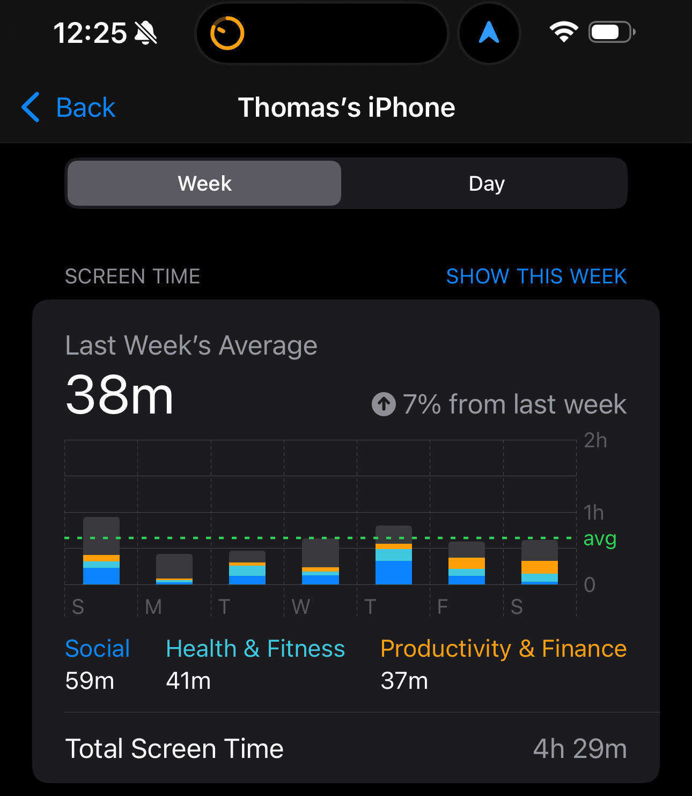

Eight Months Later
Last August I wrote about going 56 days off social media and I feel an update is due.

The harder question, the one I kept circling back to, is: what's driving you to reach for the phone in the first place?
Why the pull is so strong
This lack of awareness has been studied and monetized. Sean Parker, Facebook's first president, described the platform as a "social-validation feedback loop" and admitted it was designed to exploit a vulnerability in human psychology. Tristan Harris, a former Google product manager, called it a "race to the bottom of the brainstem." The swipe-down-to-refresh gesture mirrors pulling a slot machine lever. The unpredictable stream of likes and comments triggers more dopamine than most physically rewarding experiences would.
That compulsion you feel to reach for the phone is the product of billions of dollars of research into human psychology. It is not your fault, but it is our responsibility to do something about it.
The space between you and the screen
Devices like the Brick offer a temporary solution, but I think it does something much more simple, it gives you space. Space between you and the thing that's been engineered to hold your attention indefinitely.
Another word for that space is boredom. And boredom, when you stop pacifying it, gets uncomfortable fast. Feelings surface that you've been muting without realizing it. Don't shy away from the feelings that come up.
I'd encourage you to sit with them. Try to understand what's actually going on. Seek help if it's more than you expected — there's no shame in that. I've gone to therapy multiple times and found great value in it.
What I found underneath
For myself, I realized I had an unhealthy habit of comparing myself to people who were, on the surface, more "successful" than me. When I dug even deeper, I uncovered some limiting beliefs that were holding me back from fully expressing myself. Underneath that, these limiting beliefs came from not feeling that I was "enough." This feeling came from deep wounds of intertwining my ego with outward accomplishment — I felt the most loved growing up when I did well. Whenever those feelings of not being enough crept in, my instinct was to pick up the phone.
I hope you're seeing what I'm getting at. It's hard work and it looks different for everyone.
For me, the discomfort started to fade and something else took its place. Contentment.
I'm at a place now where the urge to scroll is gone. I genuinely don't feel like I'm missing anything. I feel at peace with who I am, and more importantly, who I am not.
I am not who I thought I needed to be at this age.
I am not a social media influencer with 1M+ followers.
I am not any of that, and that's okay.
I am Thomas Denny.
What I've noticed
Screen time as a number is basically meaningless. 40 minutes on a long phone call with my dad is not the same as 40 minutes of Instagram. The number was never really the point or the issue.
Going online now feels overstimulating in a way it didn't before. I'll open a browser or pull up a feed and almost immediately want to close it. The contrast is disorienting and gives me a headache.
I have more peace than I've had in years. That's probably the simplest way to say it.
A final thought
To be clear, this isn't a post against social media. I'm still on LinkedIn and think platforms can be used with intention. But I do think most of us haven't asked ourselves why we're reaching for the phone in the first place.
What feelings are you avoiding?